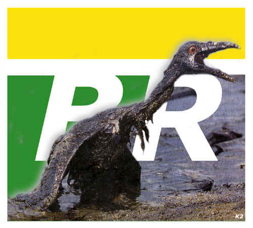

Website is defaced by P(\)W

PROTEST !!!!!!
Petrobrás, a beautiful destruction example, ambition, incompetence,
etc.
Several incidents ended in oil spill in seas of everyone.
Millions of dead animals.
Millions of dollares/reais thrown away.
Million of liters of water polluted.
#All this resolved with a fine.
Or not? And did the dead animals, return with the fine?
The millions of dollares and did Real return with the fine?
The seas descontaminados were with the fine?
Unhappily not. Unhappily it is not so easy.
The fine was paid, the money was taken advantage of, but nothing was again as before.
The money doesn't pay the life.
Petrobrás was just an example. Every man nowadays has your blame in the natural state q
he is the earth.
The destruction; deforestation; extinction of animals; ambition for money; extinction of
the nature (it blooms / fauna); violence.
They are facts that it is doing with q the life conditions in the earth they are more and
more difficult.
Does a salvation exist for all this, for the earth?
Yes. The extinction of the human race!
However that won't happen so early.
Many believe that * God * it is the salvation.
Me nor in God I believe, not even in demons or spirits. I don't have faith in
supernatural.
If an existed * God * the earth that many believe q he created, it would not be of that
way.
The ambition, sejá for violence, money, to can, destruction or even for fame, it exists
in each human being.
It would not be that a bad fact.
If all the ambition factors had a limit.
However they don't have
A to be can get to kill to get any insignificant thing q it is.
That is it * end *!
The people only call your ambitious and bad objectives deliberate.
Fraternity; Harmony; Love; Equality (partner l / racial / etc); Paz; Friendship;
Just words...
Violence; Destruction; Deforestation; Pollution; Discrimination; Ambition (limitless);
Weakness; Fear;
#Just words also?...
No, those are more q words, they are facts, reality.
Realities q commit the continuity of the earth and of the human race...
It is sad and difficult to believe in that...
However it is true!
She exist a God, that is still to be born...
She exist a * Demon *, that is the man (human being).
Will it be that one day the man will feel bill of your acts and will the future be better?
Will the salvation arrive?
It is good to believe in that, without caring with religion, race and social class...
We will join in only one to be, as it should be done and to believe in the * Salvation *.
Or to wait, and to believe q the * Salvation * it only arrives when the human race
extinguishes!
Brazil is not good at economie, health, violence, politic and stuff...
But in hacking, we RULEZ!
ADM is not deleted files (erase logs or index) :) Problems in security mailme: pnw@uol.com.br
or website www.pnw.ca.tc
Hey admins, lets stop gaving money to Bill, and beeng hackedz....stop using IIS/NT... IdiotZ
Gretzz: limit.br, Demonios, n0p1z, all P(\)W, all my girls.
Fuckz: FBI ( P(\)W not stop), REDEFACERS !!!!
by
Tw1STer